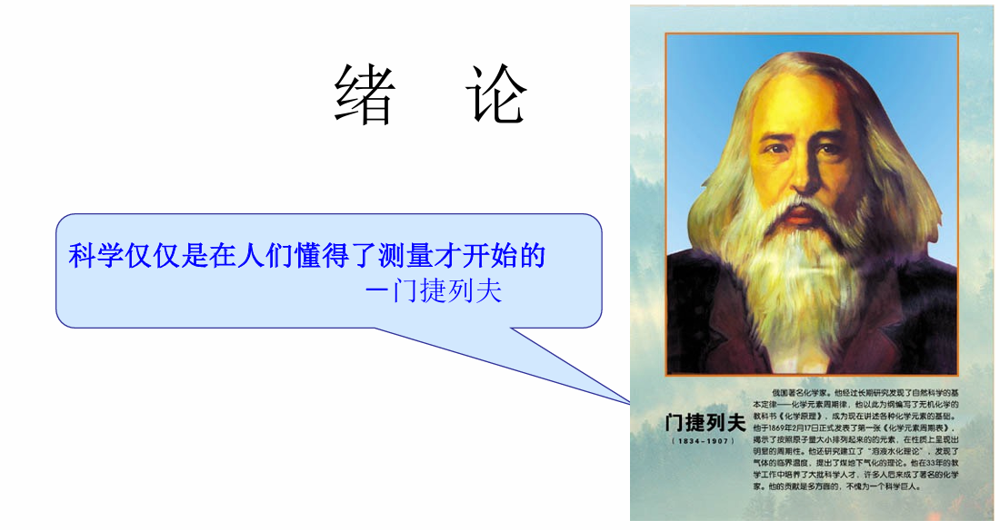
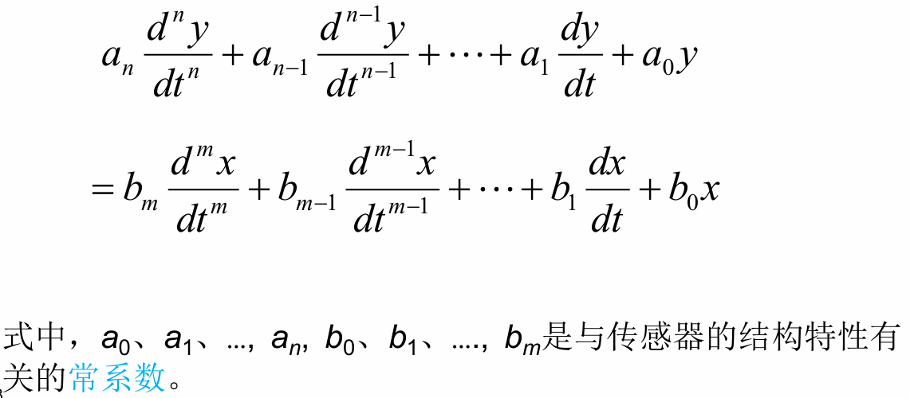
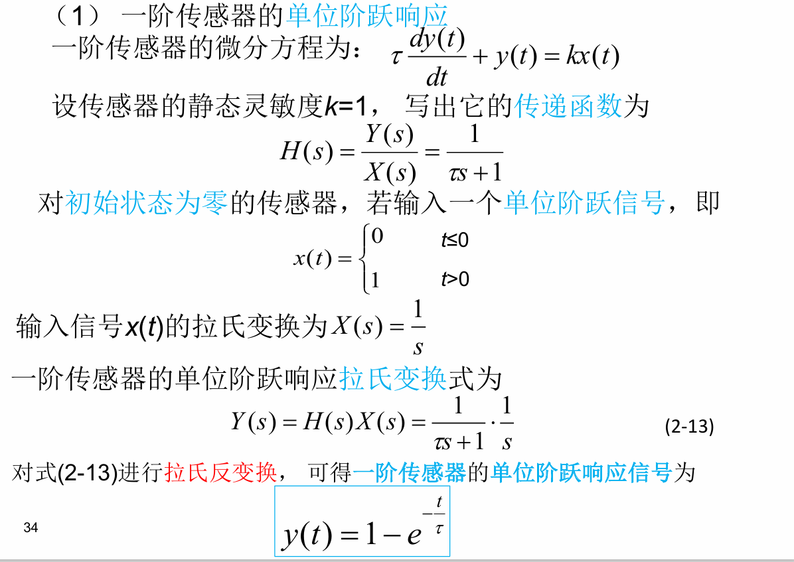
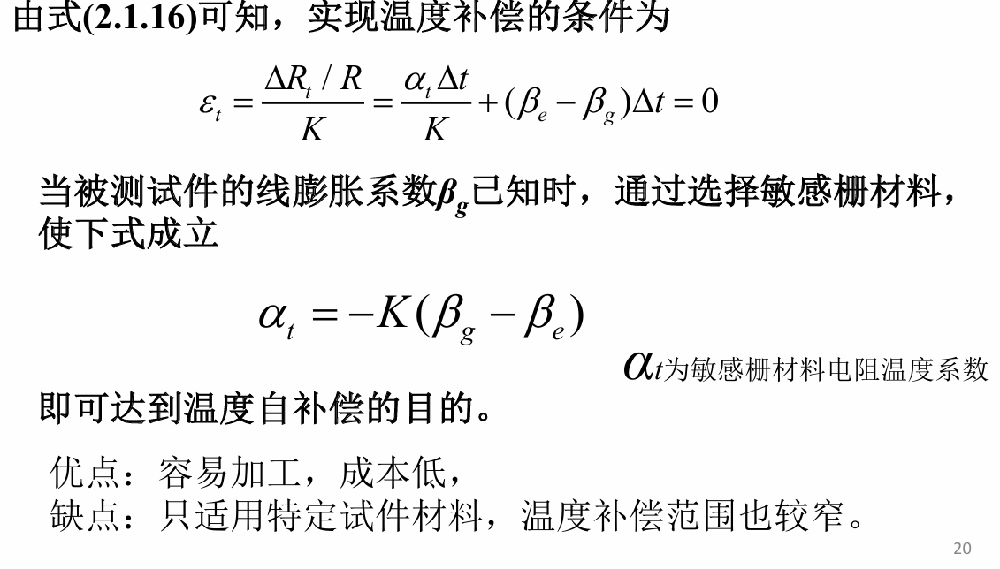
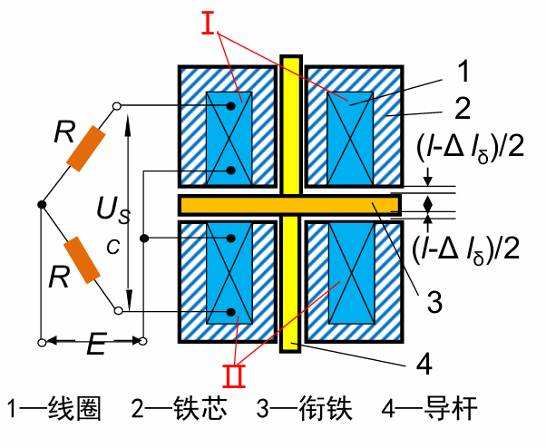
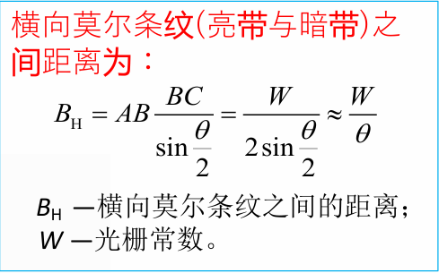
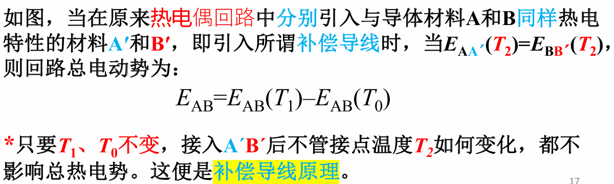

传感器技术
[TOC]

绪 论
传感器定义
国家标准（GB7665-87）中传感器（Transducer/Sensor）
- 广义上，传感器是能够感受规定的被测量并按照一定规律转换成可用输出信号 的器件或装置。
- 狭义上，传感器是将各种非电量按一定规律转换成便于处理和传输的另一种物理量的装置
注意：
- 传感器是测量装置，能完成检测任务
- 输入量是某一被测量，如物理量，化学量，生物量
- 输出量是某种物理量，主要是电物理量
- 输出输入有一定精确度的对应关系
传感器功用：一感二传,即感受被测信息,并传送出去。
案例
电动助力转向系统：
部件：方向盘，转向柱，方向盘转角传感器，转向力矩传感器，转向齿轮，转向助力电动机及 转向助力控制单元
方向盘转角传感器为光电式传感器
- 转向力矩传感器为磁阻式传感器
- 对于方向盘转角传感器：
- 对于转向力矩传感器：
传感器组成
- 敏感元件：直接感受被测量，并输出与被测量成确定关系的某 一物理量的元件
- 转换元件：把输入转换为电路参量，敏感元件的输出就是转换元件的输入
- 基本转换电路：上述电路参量接入转换电路，便可转换成电量并输出。
传感器的一般特性：
定义
任何测量装置性能的优劣总要以一系列的指标参数衡量，这些指标又称之为特性指标
静态特性：
定义
被测量的值处于稳定状态时的输出与输入的关系
如果被测量是一个不随时间变化，或随时间变化缓慢的量， 可以只考虑其静态特性，这时传感器的输入量与输出量之间在数值上 一般具有一定的对应关系，关系式中不含有时间变量。
传感器的静态特性可以用一组性能指标来描述，如：
- 灵敏度
- 迟滞
- 线性度
- 重复性
- 漂移等
四种典型的情况
线性度
定义
传感器的线性度是指传感器的输出与输入之间数量关系的线性程度。
有线性特征和非线性特征，一般希望传感器具有线性特征，即理想输入输出关系
为了标定和数据处理的方便，引入各种非线性补偿环节：
- 非线性补偿电路线性化处理
- 计算机软件
- 传感器非线性的方次不高，输入量变化范围较小时， 可用直线（切线或割线）拟合实际曲线的一段，所采用的直线称为拟合直线
- 传感器的线性度又指校准曲线于拟合直线之间最大偏差值与满量程输出值之比，也称为非线性误差

直线拟合线性化
出发点为获得最小的非线性误差
拟合方法：
- 理论拟合
- 过零旋转拟合
- 端点连线拟合（端基法）
- 端点连线平移拟合
- 最小二乘拟合
最小二乘拟合！！！
发明最小二乘法的勒让德认为，让误差的平方和最小估计出来的模型是最接近真实情形的(误差=真实值-理论值)，即
具体过程
设拟合直线为 y=k*x+b,求出各个实际校准测试点与拟合直线上对应的理想值之间的线差
使线差和最小
- 对k和b一阶偏导数等于零，求最小值，反推出k，b
或者
- 将求出的斜率k和截距b代入拟合直线方程
灵敏度
定义
传感器输出的变化量与引起该变化量的输入变化量之比即为其静态灵敏度
表征传感器对输入量变化的反应能力
精确度
- 精密度：说明测量传感器输出值的分散性，即对某一稳定的被测量，由同一个测量者，用同一个传感器，在相当短的时间内连续重复测量多次，其测量结果的分散程度。精密度是随机误差大小的标志
- 准确度：说明传感器输出值与真值的偏离程度，准确度是系统误差大小的标志
- 精确度：是精密度与准确度两者的总和
动态特性：
定义
传感器的动态特性是指输入量随时间变化时传感器的响应特性，由于传感器的惯性和滞后，当被测量随时间变化时，传感器的输出往往来不及达到平衡状态
传感器的输出量也是时间的函数 ，其间的关系要用动态特性来表示
实际的传感器，输出信号将不会与输入信号具有相同的时间函数, 这种输出与输入间的差异就是所谓的动态误差
基本动态特性方程
动态特性一般都可以用下述的微分方程来描述

零阶系统，例子！
方程式中的系数除了 a0、b0 之外，其它的系数均为零，
无论被测量x(t)如何随时间变化，零阶系统的输出都不会失真，其输出在时间上也无任何滞后，所以零阶系统所以又称为比例系统
即微分方程变为 a0y(t)=b0x(t)
又可以写成 y(t)=kx(t)
- 典型例子
- 在工程应用中，电位器式的电阻传感器、变面积式的电容传感器及利用静态式压力传感器测量液位均可看作零阶系统
一阶系统，注意典型的一阶系统
若在标准的动态特性描述方程式中的系数除了a0、a1与b0之外，其它的系数均为零
则微分方程为
时间常数τ具有时间的量纲，它反映传感器的惯性的大小， 静态灵敏度k则说明其静态特性，所以一阶系统又称为惯性系统
- 典型的一阶系统
- 不带套管热电偶测温系统
- 电路中常用的阻容滤波器
二阶系统，！阻尼的概念
根据二阶微分方程的特征方程根的性质不同，二阶系统又可分为
- 二阶惯性系统：其特点是特征方程的根为两个负实根， 它相当于两个一阶系统串联
- 二阶振荡系统：其特点是特征方程的根为一对带负实部的共轭复根
带有套管的热电偶、电磁式的动圈仪表及RLC振荡电路等均可看作为二阶系统。
动态响应特性
传感器的动态特性不仅与传感器的 “固有因素”有关，还与传感器输入量的变化形式有关
通常选用几种典型的输入信号作为标准输入信号，来研究传感器的响应特性。
瞬态响应特性
传感器的瞬态响应是时间响应
从时域中对传感器的响应和过渡过程进行分析， 这种分析方法称为时域分析法
用得比较多的标准输入信号有阶跃信号和脉冲信号，传感器的输出瞬态响应分别称为阶跃响应和脉冲响应
一阶传感器的单位阶跃响应，跃迁公式！

注意跃迁公式
- 传感器存在惯性， 它的输出不能立即复现输入信号，而是从零开始，按指数规律上升， 最终达到稳态值。
- 时间常数τ越小，响应越快,动态误差越小
- 时间常数τ：一阶传感器输出上升到稳态值的63.2%所需的时间,称为时间常数
- 一般达到4t，即达到稳定值的98.2%可以视为稳态
二阶传感器的单位阶跃响应，阻尼比！
图为二阶传感器的单位阶跃响应曲线
二阶传感器对阶跃信号的响应在很大程度上取决于阻尼比ξ和固有角频率ωn
阻尼比ξ=0，阶跃响应是一个等幅振荡过程，称为无阻尼状态
0<阻尼比ξ<1，一个衰减振荡过程，欠阻尼状态，阻尼比越大衰减越大
阻尼比ξ=1，一个由不振荡衰减到振荡衰减的临界过程，故又称为临界阻尼状态
阻尼比ξ>1，阶跃响应是一个不振荡的衰减过程， 这种状态又称为过阻尼状态
阻尼比ξ直接影响超调量和振荡次数，为了获得满意的瞬态响应特性，实际使用中常按稍欠阻尼调整，取ξ=0.6～0.7
固有频率ωn由传感器的结构参数决定，固有频率ωn也是等幅振荡的频率，ωn越高， 传感器的响应也越快
传感器的时域动态性能指标
- 时间常数τ：一阶传感器输出上升到稳态值的63.2%所需的时间,称为时间常数
- 延迟时间td：传感器输出达到稳态值的50%所需的时间。
- 上升时间tr：传感器输出达到稳态值的90%所需的时间。
- 峰值时间tp：二阶传感器输出响应曲线达到第一个峰值所需的时间。
- 超调量σ：二阶传感器输出超过稳态值的最大值。
- 衰减比d：衰减振荡的二阶传感器输出响应曲线第一个峰值与第二个峰值之比。
频率响应特性
定义
传感器对不同频率成分的正弦输入信号的响应特性，称为频率响应特性
对于一个传感器输入端有正弦信号作用时，其输出响应仍然是同频率的正弦信号， 只是与输入端正弦信号的幅值和相位不同。
频率响应法是从传感器的频率特性出发研究传感器的输出与输入的幅值比和两者相位差的变化。
在频率响应中也用截止频率来描述传感器的动态特性。
所谓截止频率，是指幅值比下降到零频率幅值比的 1 / (2^0.5)倍时所对应的频率
截止频率反映传感器的响应速度，截止频率越高，传感器的响应越快
对一阶传感器, 其截止频率为1/τ
传感器的基本特性的讨论意义
静态特性
掌握传感器的基本测量精度
动态特性
频率响应特性
了解传感器的幅频特性和相频特性目的
在动态量测量时使其频率处于传感器的通带之内，且输出信号的相移尽可能的小；
设计传感器时，即要保证传感器的通带（与ωn有关），又要控制阻尼即可能达到临界阻尼
阶跃响应特性
传感器的阶跃响应时间，对数据的采集十分重要(防止采错),
设计传感器时，即要减小输出的过冲，又要尽量减小阶跃响应时间。
传感器选用原则
- 测量的目的
- 被测试量的选择
- 测量范围
- 输入信号的幅值，频带宽度
- 精度要求
- 测量所需要的时间
电阻式传感器
定义
原理，与应变式传感器原理比较
电阻式传感器又分为电阻式和应变式，压阻式
- 对于电阻式（电位计）
- 根据欧姆定律
- 对于应变式（金属应变片）
- 将金属应变片粘贴到各种弹性敏感元件上，使物理量的变化变成应变片的应力、应变变化，从而变成电阻值变化
- 利用了金属丝电阻应变效应：金属丝的电阻值随着金属丝的几何尺寸变化（伸长或 缩短）而发生相应的变化的现象
- 对于压阻式传感器
- 利用压阻效应：单晶硅材料在受到应力作用后，其电阻率发生明显变化
温度补偿方法，典型方法
温度补偿分为自补偿法，线路补偿法
自补偿法
自补偿法又分为单丝自补偿法，组合式自补偿法
- 单丝自补偿法

- 组合式自补偿法
线路补偿法
电桥补偿法（类似电桥电路原理）
热敏电阻
电桥电路原理，要画图
粮食称重，流程图
例子：数字式检测，作业！
电容式传感器
原理及公式，能不能用于静态测量
电容式传感器是把被测量的变化转换为电容量变化的一种传感器
- 公式
变面积（S）型
变介质介电常数型
- 例题
变极板间距（d）型
差动式电容传感器！！！，非线性误差
优缺点，如何消除缺点
优点
- 温度稳定性好
- 电容值一般与电极材料无关，仅取决于电极的几何尺寸
- 结构简单，适应性强
- 结构简单，易于制造
- 高低温， 辐射及强磁场
- 在高压力、高冲击、过载等情况下都能正常工作，能测超高压和低压差
- 能对带磁工件进行测量
- 可以做得体积很小
- 动态响应好
- 其固有频率很高，动态响应时间短，适合动态测量
- 其介质损耗小可以用较高频率供电，因此系统工作频率高
- 测量高速变化的参数，如测量振动、瞬时压力等
- 可以实现非接触测量、具有平均效应
- 采用非接触测量时,电容式传感器具有平均效应
- 所需输入能量极小，所以特别适宜低能量输入的测量
缺点及解决办法
缺点
- 输出阻抗高，负载能力差
- 其电极几何尺寸等限制，一般为几十到几百pF，使传感器的输出阻抗很高（高频供电但是也有弊端会导致寄生电容影响加大）
- 负载能力差，易受外界干扰影响（必须采取屏蔽措施）
- 容抗大（要求电容式传感器绝缘部分的电阻值极高）
- 输出特性非线
- 变间距型电容式传感器的输出特性是非线性的，不可能完全消除
- 忽略了电场的边缘效应时，输出特性才呈线性
解决方法
- 如何消除和减小边缘效应
- 适当减小极间距，使电极直径或边长与间距的比值增大
- 电极应做得极薄使之与极间距相⽐很⼩
- 增设等位环
如何消除和减小寄生电容的影响
增加电容式传感器原始电容值
- 减小极片或极筒的间距
- 增加工作面积或工作长度
注意电容式传感器的接地和屏蔽
- 采用接地屏蔽的圆筒形电容式传感器，可动极筒与连杆固定在一起随被测量移动
集成化，电容式传感器与测量电路本身或其前置级装在一个壳体内，使寄生电容可减少而且易固定不变
采用“驱动电缆”(双层屏蔽等位传输)技术 （重点！！！）要画图
测量电路只能与电容式传感器分开时，可采用 “驱动电缆”技术
双屏蔽层电缆，对1:1放大器要 求很高
如何防止和减小外界干扰：当外界干扰(如电磁场)在电容式传感器上和导线之间感应出电压并与信号一起输送至测量电路时就会产生误差。接地点不同所产生的接地电压差也是一种干扰信号
- 屏蔽和接地
- 增加原始电容量，降低容抗
- 导线和导线之间要离得远，线要尽可能短，最好成直角排列，若必须平行排列时，可采用同轴屏蔽电缆线。
- ⼀点接地
- 采用差动式电容传感器
环形共面电容式传感器！！！
原理
基于边缘效应的环形共面电容式倾角传感方法，设计了一种具有同心共面圆环嵌套极板的电容传感器，随着倾角的变化，绝缘电介液与电容器的极板发生相对转动，从而引起环形共面电容传感器的几个子电容器的电容量发生变化，根据几个子电容器电容值的关系可求出倾角值。
- 公式，环形共面电容的电场线为半径方向且沿圆周方向均匀分布。
电感式传感器
定义
利用电磁感应把被测的物理量如位移，压力， 流量，振动等转换成线圈的自感系数和互感系数的变化，再由电路转换为电压或电流的变化量输出，实现非电量到电量的转换
- 根据转换原理：自感式，互感式
- 根据结构：气隙型、面积型和螺管型
差动式结构
结构
两个电气参数和磁路完全相同的线圈组成
过程：当衔铁3移动时，一个线圈的自感增加，另 一个线圈的自感减少，形成差动形式。

灵敏度
补充
电涡流式传感器！！！基本原理
基本原理
压电式传感器
定义
是以某些电介质的压电效应为基础，在外力作用下，在电介质的表面上产生电荷，从而实现非电量测量。
压电晶体不适合于静态测量
传感器内部信号电荷无“漏损”，外电路负载无穷大时，压电传感器受力后产生的电压或电荷才能长期保存，否则电路将以某时间常数按指数规律放电。
这对于静态标定以及低频准静态测量极为不利，必然带来误差。
事实上，传感器内部不可能没有泄漏， 外电路负载也不可能无穷大，只有外力以较高频率不断地作用， 传感器的电荷才能得以补充，
因此，压电晶体不适合于静态测量
压电效应！
- 居里点:丧失压电性的温度
正压电效应（顺压电效应）
某些电介质，当沿着一定方向对其施力而使它变形时，内部就产生极化现象，同时在它的一定表面上产生电荷，当外力去掉后，又重新恢复不带电状态的现象。 当作用力方向改变时，电荷极性也随着改变。
逆压电效应（电致伸缩效应）
当在电介质的极化方向施加电场，这些电介质就在一定方向上产生机械变形或机械应力，当外加电场撤去时，这些变形或应力也随之消失的现象
压电陶瓷的正逆压电效应和现象
正压电效应
在陶瓷片上加一个与极化方向平行的压力F -> 压缩形变 -> 正、负束缚电荷之间的距离变小，极化强度变小 -> 吸附在电极上的自由电荷，有一部分被释放，而出现放电现象
压力撤消后，陶瓷片恢复原状(这是一个膨胀过程) -> 电荷之间的距离变大，极化强度变大 -> 电极吸附一部分自由电荷而出现充电现象
这种由机械效应转变为电效应，或者由机械能转变为电能的现象，就是压电陶瓷的正压电效应
逆压电效应
陶瓷片上加一个与极化方向相同的电场 -> 电场的方向与极化强度的方向相同 -> 电场使极化强度增大 -> 正负束缚电荷之间距离也增大 -> 陶瓷片沿极化方向产生伸长形变
外加电场的方向与极化方向相反 -> 缩短形变
这种由于电效应而转变为机械效应或者由电能转变为机械能的现象，就是压电陶瓷的逆压电效应。
总结
压电陶瓷所以具有压电效应，是由于陶瓷内部存在自发极化。这些自发极化经过极化工序处理而被迫取向排列后，陶瓷内即存在剩余极化强度。如果外界的作用 （如:压力或电场的作用）能使此极化强度发生变化， 陶瓷就出现压电效应。
此外，陶瓷内的极化电荷是束缚电荷，而不是自由电荷，这些束缚电荷不能自由移动。所以在陶瓷中产生的放电或充电现象，是通过陶瓷内部极化强度的变化，引起电极面上自由电荷的释放或补充的结果。
切型，画图！！！
石英晶体的压电效应
- 沿电轴X－X方向的力 作用下产生电荷的压电效应 称为“纵向压电效应”
- 沿机械轴Y－Y方向的力作 用下产生电荷的压电效应称 为“横向压电效应”
沿光轴Z－Z方向受力则不产生压电效应
同时注意
切型符号表示方法
因为石英是一种各向异性晶体，因此，按不同方向切割的晶 片，其物理性质（如:弹性、压电效应、温度特性等）相差很大。 为了在设计石英传感器时，根据不同使用要求需要正确地选择石英片的切型
习惯符号表示法(按照与IRE标准规定的切型符号表示法有对应 表进行转换即可)
IRE (无线电工程师协会)标准规定的切型符号表示法
IRE标准规定的切型符号，包括一组字母（X、Y、Z、t、l、 b）和角度。
用X、Y、Z中任意两个字母的先后排列顺序，表示石英晶片厚度和长度的原始方向；
用字母t（厚度）、l（长 度）、b（宽度）表示旋转轴的位置。
当角度为正时,表示逆时 针旋转；当角度为负时,表示顺时针旋转。
(YXl)35º：
- 第一个字母Y表示石英晶片在原始位置(即旋转前的 位置)时的厚度沿Y轴方向
- 第二个字母X表示石英晶片在原始位置时的长度沿X轴方向
- 第三个字母l和角度 35º表示石英晶片绕长度逆时针旋转35º
- （XYtl）5º/-50º：
- 它表示石英晶片原始位置的厚度沿X轴方向，
- 长度沿Y轴方向，
- 先绕厚度t逆时针旋转5度，再绕长度l顺 时针旋转50度
提高灵敏度方法
- 对于压电式加速度传感器

电荷量直接反映加速度大小。其灵敏度与压电材料压电系数和质量块的质量有关
- 一般选择压电系数大的压电陶瓷片
- 可以但一般不用增加质量办法来提高传感器灵敏度
- 增加压电片数目
- 合理的连接方法
这里展开说明连接方式
压电式超声波传感器的基本原理，和测流量方法
基本原理
超声波发送器利用压电晶体的逆向压电效应来工作
超声波接收器是利用正向压电效应制成
超声波流量计
时间差法
频率差法
数字式传感器
码盘式传感器
工作原理
用光电方法把被测角位移转换成以数字代码形式表示的电信号的转换部件
二进制码盘，有权码计算！！！
对于6位二进制码盘：
最内圈称为C码道，一半透光、一半不透光。最外圈称为C1码道，有2^6=64个黑间隔。
每一个角度方位对应于不同的编码
有权码计算
n位二进制码盘具有2^n种编码，容量为2^n，最小分辨率为 θ＝360／2^n, 最外圈角节距为2θ
二进制码为有权码
- 例如
莫尔条纹原理
把光栅常数相等的主光栅和指示光栅相对叠合在一起，片间留有很小的间隙，并使两者栅线光栅刻线之间保持很⼩的夹角θ，于是在接近于垂直栅线的方向上出现明暗相间的条纹。在a-a’线上两光栅的栅线彼此重合，光线从缝隙中通过，形成亮带；在b-b’线上，两光栅的栅线彼此错开，形成暗带。这种明暗相间的条纹称为莫尔条纹。莫尔条纹方向与刻线方向垂直，故又称横向莫尔条纹。
当主光栅相对于指⽰光栅移动时，形成的莫尔条纹产⽣亮暗交替变化
利用光电接收元件将莫尔条纹亮暗变化的光信号， 转换成电脉冲信号，并用数字显示，从而测量出标尺光栅的移动距离

热电式传感器
定义
热电式传感器是利用转换元件电磁参量随温度变化的特性，对温度和与温度有关的参量进行检测的装置
其中将温度变化转换为电阻变化的称为热电阻式传感器
将温度变化转换为热电势变化的称为热电偶传感器
热电偶传感器
定义
温差热电偶（简称热电偶）是目前温度测量中使用最普遍的传感元件之一
- 结构简单，测量范围宽、准确度高、热惯性小，输出信号为电信号
- 微型热电偶还可用于快速及动态温度的测量
工作原理
两种不同的导体或半导体A和B组合成如下图所示闭合回路，若导体A和B的连接处温度不同（设T＞T0），则在此闭合回路中就有电流产生，也就是说回路中有电动势存在，这种现象叫做热电效应。又称为西拜克效应
接触电势
定义
在导体A、B的接触⾯上便形成一个从A到B的静电场这个电场阻碍了电子的继续扩散，当达到动态平衡时， 在接触区形成一个稳定的电位差，即接触电势
原理
不同的导体材料其自由电⼦密度不同
当两种不同的导体接触时，在接触面上因自由电子密度不同而发生电子扩散，电子扩散速率与两导体的电子密度有关，并和接触区的温度成正比
所以接触电势的大小与温度高低及导体中的电子密度有关。
温差电势
定义
单⼀导体中，如果两端温度不同，在两端间会产生电势，即单一导体的温差电势。
原理
导体内自由电⼦在高温端具有较⼤的动能，因⽽向低温端扩散，结果⾼温端因失去电⼦⽽带正电荷，低温端因得到电⼦⽽带负电荷，从⽽形成⼀个静电场。
该电场阻碍电子的继续扩散，当达到动态平衡时，在导 体的两端便产生一个相应的电位 差，该电位差称为温差电势。
回路总电势
由导体材料A、B组成的闭合回路，其结点温度分别为T、T0，如 果T＞T0，则必存在着两个接触电势和两个温差电势，回路总电势：
在⼀个热电偶回路中起决定作⽤的，是两个接点处产⽣的与材料性质和该点所处温度有关的接触电势
所以上式可以近似改变为：
在工程中，常⽤上式来表征热电偶回路的总热电势
结论
- 热电偶回路热电势只与组成热电偶的材料及两端温度有关；与热电偶的长度、粗细无关
- 只有用不同性质的导体(或半导体)才能组合成热电偶
- 只有当热电偶两端温度不同,热电偶的两导体材料不同，才能有热电势产生
- 导体材料确定后，热电势的大小只与热电偶两端的温度有关
热电偶回路性质，四个定律
均质导体定律
由一种均质导体组成的闭合回路，不论其导体是否存在温度梯度，回路中没有电流(即不产生电动势)
如果有电流流动，此材料则一定是非均质的， 即热电偶必须采用两种不同材料作为电极
中间导体定律
一个由几种不同导体材料连接成的闭合回路，只要它们彼此连接的接点温度T相同，则此回路各接点产生的热电势的代数和为零。
- 用途
如图所示，根据上述原理，可以在热电偶回路中接入电位计E，只要保证电位计与连接热电偶处的接点温度相等，就不会影响回路中原来 的热电势，接入的方式如图所示
标准电极定律
如图，如果任意两种导体材料的热电势是已知的，它们的冷端和热端的温度又分别相等，如图所示，它们相互间热电势的关系为：

- 用途
- 纯金属很多，合金更多，如果要得出它们之间的热电动势很困难。铂的物理化学性质稳定，熔点⾼、易提纯。通常选⽤⾼纯铂丝作为标准电极和其它金属进行结点测量温度
中间温度定律
中间温度定律为制定热电偶的热电势分度表奠定了理论基础
补偿导线原理

热电偶冷端的延长 ！！
定义
采用相对廉价的补偿导线，可延长热电偶的冷端，使之远离高温区；可节约大量贵 金属；易弯曲，便于敷设
冷端处理及补偿
原因
- 热电偶热电势的大小是热端温度和冷端的函数差，为保证输出热电势是被测温度的单值函数，必须使冷端温度保持恒定；
- 热电偶分度表给出的热电势是以冷端温度0℃为依据，否则会产生误差。
冷端处理方法
- 冰点槽法
- 计算修正法
- 补正系数法
- 零点迁移法
- 冷端补偿器法
- 软件处理法
冰点槽法，也称为冰浴法
把热电偶的参比端置于冰水混合物容器里，使T0=0℃。这种办法仅限于 科学实验中使用。为了避免冰水导电引起两个连接点短路，必须把连接点分别置于两个玻璃试管里，浸入同一冰点槽，使相互绝缘
冷端补偿器法
利用不平衡电桥产生热电势补偿热电偶因冷端温度变化而引起热电势的变化值。
不平衡电桥由R1、R2、R3(锰铜丝绕制)、RCu(铜丝绕制)四个桥臂和桥路电源组成。设计时，在0℃下使电桥平衡(R1=R2=R3=RCu)，此时Uab=0 ， 电桥对仪表读数无影响。
热电阻传感器原理，三线制法！！！
定义
金属或者半导体的电阻值随温度变化而变化，将温度变化转换为电阻变化
热电阻传感器可分为：
- 金属热电阻式，简称热电阻
- 半导体热电阻，简称热敏电阻
三线制法
目的
为避免或减小导线电阻对测温的影响，⼯业热电阻多半采⽤三线制接法。
设计电桥时如满足R1=R2，则式中右边含有r的项完全消去，这种情况下连线电阻r对桥路平衡毫⽆影响， 即可以消除热电阻测量过程中连线电阻r的影响。但必须注意，只有在对称电桥(R1=R2的电桥)，且只有在平衡状态下才如此
工业热电阻有时用不平衡电桥指示温度，例如，动圈仪表是采⽤不平衡电桥原理指⽰温度的。这种情 况下，虽然不能完全消除连接导线电阻r对测温的影响，但采用三线制接法肯定会减少它的影响
四线制法
四线制就是热电阻Rt两端各用两根导线连到仪表上和恒流源E上（四根导线电阻都为r）
注意电位差计测量时不取电流
霍尔式传感器
原理
霍尔传感器是基于霍尔效应的一种传感器
将霍尔元件置于磁场B中，如果在x, y端通以电流I。在z, w两端就会出现电位差， 称为霍尔电势UH，此现象叫霍尔效应
具体来说，半导体中电子将沿着与电流方向相反方向运动。任何带电质点在场中沿着和磁力线垂直的方向运动时，要受到洛伦兹力FL作用，向一边偏移， 并形成电子积累，而另一边积累正电荷，于是形成电场。该电场将阻止运动电子继续偏移，当电场力FE与FL相等时，电子积累达到动态平衡，这时元件z, w 两端之间建立的电场叫霍尔电场EH，相应电势叫霍尔电势UH。
定向运动的电子除受到洛仑兹⼒外，还受到霍尔电场的作用，当FL=FE 时， 达到平衡，则有上述公式。
导体的霍尔系数一般较小，所以霍尔元件⼀般⽤半导体制作，且愈⼩（薄），灵敏度愈⾼。
光敏式传感器
光敏传感器中典型的是光纤传感器(FOS, Fiber Optical Sensor)是20世纪70年代中 期发展起来的一种基于光导纤维的新型传感器。
光纤传感器⽤光作为敏感信息的载体，⽤光纤作为传递敏感信息的媒质。因此，它同时具有光纤及光学测量的特点
原理
- 光的折射
- 斯乃尔定理（Snell's Law）
- 光纤结构